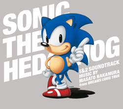

"DREAMS COME TRUE"の中村正人氏が手がけたソニックの楽曲を世界初収録したCD『ソニック・ザ・ヘッジホッグ 1&2 サウンドトラック』を2011年10月19日に発売することが決定し、ジャケット写真を初公開しました。
サウンドトラックには、メガドライブ音源による懐かしいサウンドはもちろん、20年前に中村正人氏が当時の機材を駆使して作り出したオリジナル音源を多数収録。またボーナストラックとして、『ソニック・ザ・ヘッジホッグ2』のエンディングテーマにもなった"DREAMS COME TRUE"の楽曲「SWEET SWEET SWEET」や、「SWEET DREAM」「SWEET SWEET SWEET -06 AKON MIX-」「SWEET DREAM -06 AKON MIX-」の4曲も収録されています。
さらにサウンドトラックに付属しているブックレットには、中村正人氏のコメント、中裕司氏のインタビュー、中村正人氏ご本人が保管していた『ソニック・ザ・ヘッジホッグ』初期原案書の一部が掲載されています。初期原案書からは、ここにしか描かれていなかったソニックのイラストやステージスケッチを初公開！パッケージまるごとソニックファン必携のサウンドトラックとなっています。
【Disc1】
| 1 |
STH1 Green Hill Zone ～ Mega Drive version ～ |
| 2 |
STH1 Marble Zone ～ Mega Drive version ～ |
| 3 |
STH1 Spring Yard Zone ～ Mega Drive version ～ |
| 4 |
STH1 Labyrinth Zone ～ Mega Drive version ～ |
| 5 |
STH1 Star Light Zone ～ Mega Drive version ～ |
| 6 |
STH1 Scrap Brain Zone ～ Mega Drive version ～ |
| 7 |
STH1 Final Zone ～ Mega Drive version ～ |
| 8 |
STH1 Special Stage ～ Mega Drive version ～ |
| 9 |
STH1 Power Up ～ Mega Drive version ～ |
| 10 |
STH1 1up ～ Mega Drive version ～ |
| 11 |
STH1 Title ～ Mega Drive version ～ |
| 12 |
STH1 All Clear ～ Mega Drive version ～ |
| 13 |
STH1 Stage Clear ～ Mega Drive version ～ |
| 14 |
STH1 Boss ～ Mega Drive version ～ |
| 15 |
STH1 Game Over ～ Mega Drive version ～ |
| 16 |
STH1 Continue ～ Mega Drive version ～ |
| 17 |
STH1 Staff Roll ～ Mega Drive version ～ |
| 18 |
STH2 Emerald Hill Zone ～ Mega Drive version ～ |
| 19 |
STH2 Chemical Plant Zone ～ Mega Drive version ～ |
| 20 |
STH2 Aquatic Ruin Zone ～ Mega Drive version ～ |
| 21 |
STH2 Casino Night Zone ～ Mega Drive version ～ |
| 22 |
STH2 Hill Top Zone ～ Mega Drive version ～ |
| 23 |
STH2 Mystic Cave Zone ～ Mega Drive version ～ |
| 24 |
STH2 Oil Ocean Zone ～ Mega Drive version ～ |
| 25 |
STH2 Metropolis Zone ～ Mega Drive version ～ |
| 26 |
STH2 Mystic Cave Zone (2P) ～ Mega Drive version ～ |
| 27 |
STH2 Casino Night Zone (2P) ～ Mega Drive version ～ |
| 28 |
STH2 Death Egg Zone (Part1) ～ Mega Drive version ～ |
| 29 |
STH2 Death Egg Zone (Part2) ～ Mega Drive version ～ |
| 30 |
STH2 Emerald Hill Zone (2P) ～ Mega Drive version ～ |
| 31 |
STH2 Sky Chase Zone ～ Mega Drive version ～ |
| 32 |
STH2 Wing Fortress Zone ～ Mega Drive version ～ |
| 33 |
STH2 Special Stage ～ Mega Drive version ～ |
| 34 |
STH2 Power Up ～ Mega Drive version ～ |
| 35 |
STH2 Title ～ Mega Drive version ～ |
| 36 |
STH2 All Clear ～ Mega Drive version ～ |
| 37 |
STH2 Boss ～ Mega Drive version ～ |
| 38 |
STH2 Super Sonic ～ Mega Drive version ～ |
| 39 |
STH2 Option ～ Mega Drive version ～ |
| 40 |
STH2 Staff Roll ～ Mega Drive version ～ |
| 41 |
STH2 Game Results ～ Mega Drive version ～ |
| 42 |
STH2 Unused Song ～ Mega Drive version ～ |
【Disc2】
| 1 |
STH1 Green Hill Zone ～ Masa's Demo version ～ |
| 2 |
STH1 Marble Zone ～ Masa's Demo version ～ |
| 3 |
STH1 Spring Yard Zone ～ Masa's Demo version ～ |
| 4 |
STH1 Labyrinth Zone ～ Masa's Demo version ～ |
| 5 |
STH1 Star Light Zone ～ Masa's Demo version ～ |
| 6 |
STH1 Scrap Brain Zone ～ Masa's Demo version ～ |
| 7 |
STH1 Final Zone ～ Masa's Demo version ～ |
| 8 |
STH1 Special Stage ～ Masa's Demo version ～ |
| 9 |
STH1 1up ～ Masa's Demo version ～ |
| 10 |
STH1 Title ～ Masa's Demo version ～ |
| 11 |
STH1 All Clear ～ Masa's Demo version ～ |
| 12 |
STH1 Stage Clear ～ Masa's Demo version ～ |
| 13 |
STH1 Boss ～ Masa's Demo version ～ |
| 14 |
STH1 Game Over ～ Masa's Demo version ～ |
| 15 |
STH1 Continue ～ Masa's Demo version ～ |
| 16 |
STH2 Emerald Hill Zone ～ Masa's Demo version ～ |
| 17 |
STH2 Chemical Plant Zone ～ Masa's Demo version ～ |
| 18 |
STH2 Aquatic Ruin Zone ～ Masa's Demo version ～ |
| 19 |
STH2 Casino Night Zone ～ Masa's Demo version ～ |
| 20 |
STH2 Hill Top Zone ～ Masa's Demo version ～ |
| 21 |
STH2 Mystic Cave Zone ～ Masa's Demo version ～ |
| 22 |
STH2 Oil Ocean Zone ～ Masa's Demo version ～ |
| 23 |
STH2 Metropolis Zone ～ Masa's Demo version ～ |
| 24 |
STH2 Mystic Cave Zone (2P) ～ Masa's Demo version ～ |
| 25 |
STH2 Casino Night Zone (2P) ～ Masa's Demo version ～ |
| 26 |
STH2 Death Egg Zone (Part1) ～ Masa's Demo version ～ |
| 27 |
STH2 Death Egg Zone (Part2) ～ Masa's Demo version ～ |
| 28 |
STH2 Emerald Hill Zone (2P) ～ Masa's Demo version ～ |
| 29 |
STH2 Sky Chase Zone ～ Masa's Demo version ～ |
| 30 |
STH2 Wing Fortress Zone ～ Masa's Demo version ～ |
| 31 |
STH2 Special Stage ～ Masa's Demo version ～ |
| 32 |
STH2 All Clear ～ Masa's Demo version ～ |
| 33 |
STH2 Boss ～ Masa's Demo version ～ |
| 34 |
STH2 Super Sonic ～ Masa's Demo version ～ |
| 35 |
STH2 Option ～ Masa's Demo version ～ |
| 36 |
STH2 Game Results ～ Masa's Demo version ～ |
| 37 |
STH2 Unused Song ～ Masa's Demo version ～ |
| 38 |
Theme of SONIC THE HEDGEHOG Demo |